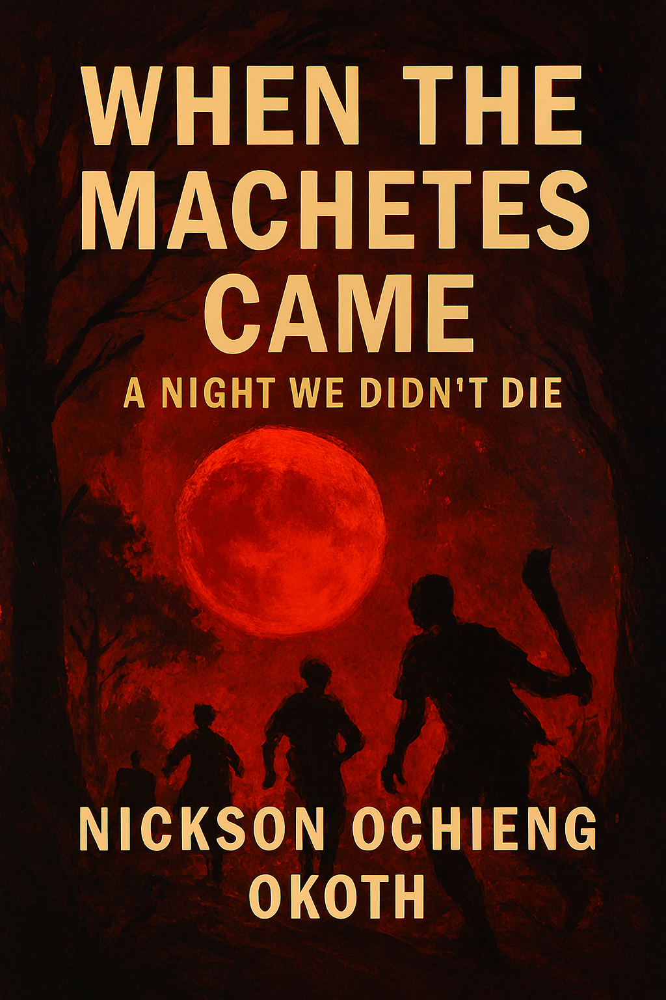

üìò Emeka the Chief‚Äôs Son

A dramatic tale of pride, betrayal, and chaos on a wedding day in Imo State, Nigeria.
Read on Booksieüî• Ashes to Ambition: The Testament of Zawadi

A poetic testament of rebirth, ambition, and the fire that fuels legacy.
Read on Booksieüó°Ô∏è When the Machetes Came: A Night We Didn‚Äôt Die
A haunting reflection on survival, memory, and the silence that followed violence.
Read on Booksieüö∂ The Unstoppable Journey of Mahesh: From Rebellion to Redemption

A cinematic journey of transformation, rebellion, and spiritual awakening.
Read on Booksie